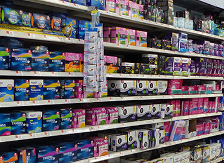
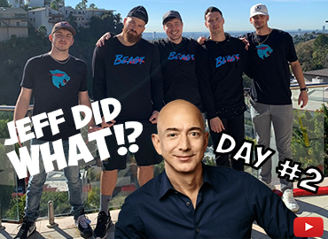
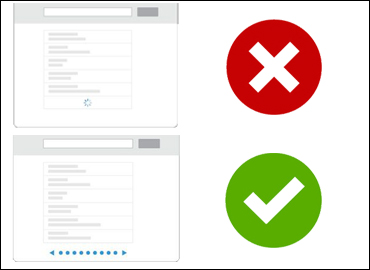
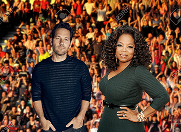
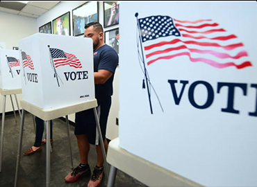
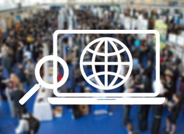
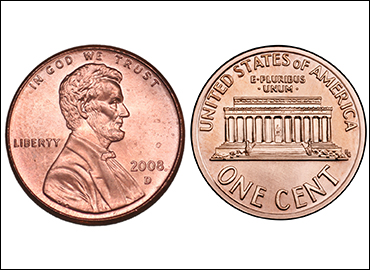
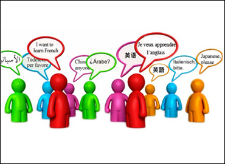

Tampons, pads, and wipes should be accessible to all women. Some think that these items should be tax-free, but I say go further; menstrual cycles are a fact of life, and our society must accept that. These products can be distributed at restrooms and public institutions, such as schools, libraries, community centers, and post offices.

Free Feminine Hygiene Products

Give Jeff Bezos a YouTube Channel
I propose for prominent YouTube vloggers, like Mr. Beast and David Dobrik, to consult and collab with a Jeff Bezos YouTube channel. A platform like this will allow him to create philanthropic videos that are also entertaining and boost his ego (i.e. "Jeff Cures Chickenpox... BLINDFOLDED??")

Prohibit the Infinite Scroll
The infinite scroll was a tool deliberately designed to keep us on social media and other sites longer. This addiction has brought on depression, political polarization, and singularity of thought. Let's give choice back to consumers and allow them to accept more content or not! This is my first of many policies to address tech addiction.

Create an American Monarch System
What if we elected a "King/Queen of America" every four years who had zero governing power? They can give awards, go to the Olympics, and raise the spirits of all citizens. So, next time a bashful, charismatic TV personality wants a political office, he can have this and allow the serious people to focus on policy. As President, I'd endorse Paul Rudd and Oprah Winfrey.

Declare a National Voting Holiday
I never understood this- why does the most important part of our democratic process not have time allocated to it? The elections of President, State Reps, and local offices should all have a dedicated holiday that gives workers and students a window to cast their vote. Now, an individual that works a 9 to 5 and cares for a child won't need to deliberate between voting or putting food on the table. That's true freedom.
Redistribute School Breaks
Instead of one, long summer break, K-12 schools should split up breaks into three, one-month periods throughout the year. This does two things: first, students and teachers will be able to de-stress, have fun, and learn outside the classroom across all seasons. Second, smaller breaks will allow kids to retain knowledge as they progress. A more integrated school year will improve the mental health and ability of our future generation.

Government-Leased Narrow Cars
The solution to our pollution and traffic problems can be solved with the help of narrow cars. A personal car is the most convenient way for suburbanites to commute to and from work. So, in addition to offering bus and trolley system to sensible areas, I propose the government to orchestrate the production and leasing of ultra-narrow cars to the public. This will reduce traffic, lower CO2 emissions, and give low-income, single-driver indivudals the freedom to travel.
Eliminate Live Audiences in Debates
Every four years, Americans must rely on live, on-stage debates to provide them the pedantic and social characteristics they need to decide their candidate. Enough pageantries, I say! Instead of a two-hour session filled with frothy applause lines, we should have small-spaced debates. Mediums like podcasts and roundtable discussions are a much better way to assess a candidate's policies rather than showmanship.

Develop an Altruistic Job Platform
What if non-profits in need of software development, physical labor, or administrative work could post temp jobs on a website, and those jobs were compensated by the government? People could give back while they're in between jobs, learning a new skill, or- for internationals- wanting to prove their citizenship. Plus, non-profits will benefit, while citizens can see the direct impacts of some of their taxes. Let's create an economy that does well and does good.
Change October to "Anti-Breast Cancer Awareness Month"
Call me old-fashioned, but I am against cancer! Breast cancer impacted my family and millions more. So, why did we create a month that sounds like it elevates, if not celebrates, the existence of breast cancer? Silly people. As President, I would clarify our nation's position on Breast Cancer; we don't like it. Stop it.

Get Rid of the Penny
The penny makes no cents. The fiat value of a penny is less than the cost to produce it. Plus, nobody uses the penny; in the age of 21st century inflation and digital payments, pennies (and all coins for that matter) are being phased out of payment norms. As President, I would institute a buy-back program of all pennies and declare the nickel as the lowest-value currency.

Reward Multi-Linguists
I genuiely believe we can attain world peace if every American was fluent in at least two languages. Thus, the government should provide schools and citizens economic incentives to do exactly that. After passing a fluency exam, citizens of any age, can receive loan forgiveness or straight cash. In-demand languages, like English, Spanish, and Chinese, will merit higher rewards.
Year-round Daylight Savings
Daylight Savings Time was implemented to decrease energy usage and make better use of the daylight. Great! So, why can't be take advantage of that for the other 6 months of the year? In addition to saving energy, year-around Daylight Savings will promote more outdoor activity, reduce night-related driving incidents, and increase economic consumption (more daylight equals more tme for shopping!)
Free Check Cashing
According to the Federal Reserve, about 22% of US Households go unbanked or underbanked. This stems from deeply rooted, systematic issues regarding poverty and race in America, which need to be addressed. However, we must act now. Instead of forcing citizens to cash checks that are rightfully theirs at for-profit "Cash 4 Checks" establishments, the government should provide this service at post offices for free.